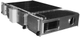

2023年
問題70 空気調和機に関する次の記述のうち，最も不適当なものはどれか．
（1）エアハンドリングユニットは，熱源設備から供給される冷水・温水・蒸気等を用いて空調空気を作り，各ゾーン・各室にダクトにより送風する．
（2）ターミナルエアハンドリングユニットは，全熱交換器制御機器，還気送風機等の必要機器が一体化された空調機である．
（3）ファンコイルユニットは，送風機，熱交換器，エアフィルタ及びケーシングによって構成される室内設置用の小型空調機である．
（4）パッケージ型空調機は，圧縮機，膨張弁，蒸発器，凝縮器等によって構成される．
（5）パッケージ型空調機のうちヒートポンプ型は，採熱源によって水熱源と空気熱源に分類される．
2023年
問題70 正解（2） 頻出度AAA
ターミナルエアハンドリングユニットは全熱交換器や還気送風機はもたない．各室や細分されたゾーンの空調に特化した小風量タイプの空調機で，-(3) のファンコイルユニットを高機能・高性能化した空調機とみることもできる．
壁面設置型や天井隠蔽型など，特別に空調機械室を必要としないものが多く，センサ・制御盤を内蔵し個別制御性を高めている．
ファンコイルよりも高性能なフィルタを使用することができる（2023-70-1図参照）．

出典 昭和鉄工株式会社
https://www.showa.co.jp/
-(1) エアハンドリングユニットは独自の熱源装置は持たず，外部から冷温水や蒸気を取り入れて熱源とし，ダクトに接続して用いられる空気調和機である（2023-70-2図〜2023-70-4図参照）．
出典 株式会社ニッシン工業
https://n-s-industry.co.jp/products/air/
空気冷却器には冷水コイル，空気加熱器には温水コイル又は蒸気コイルが用いられる．冷房時に冷水，暖房時に温水を通す冷温水乗用コイルも用いられる．
コイルはプレートフィン式コイルが用いられる．
内部の構成は，気流の上流側からエアフィルタ，空気冷却器，空気加熱器，加湿器，エリミネータ，ドレンパン，送風機並びに電動機等である．
梅雨時など潜熱負荷がきわめて大きい場合に，冷却除湿後再熱を行うために加熱コイルは冷却コイルの下流に設置する．
加湿器の水滴を蒸発させるためには，加熱が必要なので，加熱コイルは加湿器の前に設置する．
エリミネータは，冷却コイルの凝縮水や噴霧加湿により生じた水滴の飛散防止用である．
送風機としては，多翼送風機（シロッコファン）が多用される．
ケーシングには，内外面が鋼板でその内部に断熱材として発泡フォームを用いたサンドイッチ構造の外表パネルが用いられる．
エアフィルタヒしては，ユニット型の乾式フィルタを用いることが多い．
これらの構成機器は使用目的に合わせて変更することができる．
-(3)ファンコイルユニット（FCU）は，その名の通り，ファンとコイル（とフィルタ）で構成されたシンプルな空調機である（2023-70-5図参照）．
FCUは，住宅の冷暖房用やダクト併用ファンコイルユニット方式における端末ユニットとして幅広く用いられる．
エアフィルタ，冷温水コイル（熱交換器），送風機，電動機，ケーシング等で構成された，室内設置型の小型空気調和機で，一般的に加湿器はもたない．又別途換気の設備を必要とする．
熱処理は水方式で効率が良いので，負荷が大きく，又変動も多いペリメータゾーン（窓際外周部）に設置されることが多い．
FCUの種類には，床置き型（露出型・埋め込み型），天井型(つり型(露出型)・隠ぺい型・埋め込み型)がある．埋め込み型には吹出し面と吸込み面が1枚のパネルに併設されていて，天井面にそのパネルが露出したカセット型がある．
コイルは冷温水兼用のもの，冷水コイルと温水コイルを別々に組み込んだものがあり，用途に応じて使い分けられている．配管は2管式（往き管，還り管），3管式（冷水往き管，温水往き管，共通還り管），4管式(冷水往き管，温水往き管，冷水還り管，温水還り管)があり，3管式，4管式ファンコイルユニット方式は，各ユニットごとに冷水，温水を選択して冷暖房を行うことが可能である．
容量制御方法には，空気側制御，水側制御，それらを組み合わせた方式がある．ファンの電動機としては単相100Vが多用され，巻線切り替えで回転数を変える．利用者が現場で風量や設定温度を変えられるので個別制御性も高い．
ファンコイルの送風機は静圧が小さいので圧力損失が大きい高性能フィルタは使用できず，抵抗の小さい粗じん用フィルタが用いられる．
床置き型のファインコイルの吹出し風向は冷房時は真上に，暖房時は室内側に向けて吹出すように調節する．
比較的室数の多い建築物に分散して多数設置されるため，保守点検が繁雑になりやすい．
-(4) 冷暖房兼用のヒートポンプ型パッケージ型空調機の構成図を2023-70-6図に示す．
ヒートポンプ型では，冷媒の流れを四方弁で切替え，室外機，室内機の熱交換器（冷媒コイル）が，蒸発器⇔凝縮器と役割をチェンジする（詳しいメカニズムが知りたければ，次の動画が面白い）．
-(5) ヒートポンプ型空調機は，暖房時冷媒の蒸発温度の高く，冷房時凝縮温度が低い水熱源の方がCOPはよいが，普及しているのはシンプルで立地の制約が少ない空冷式である．